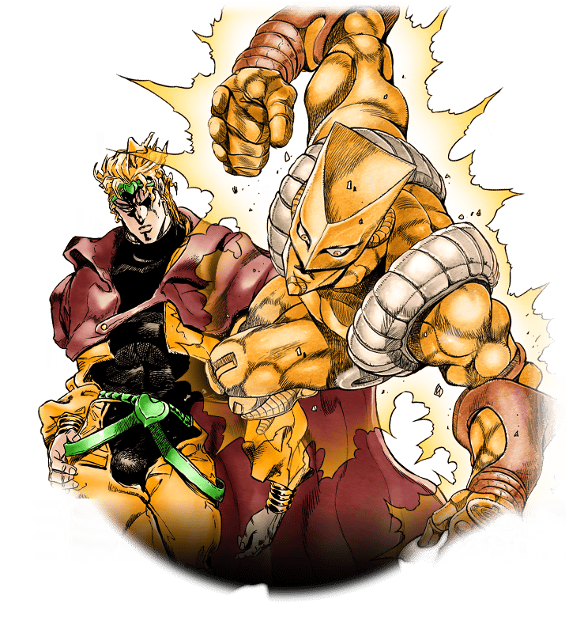
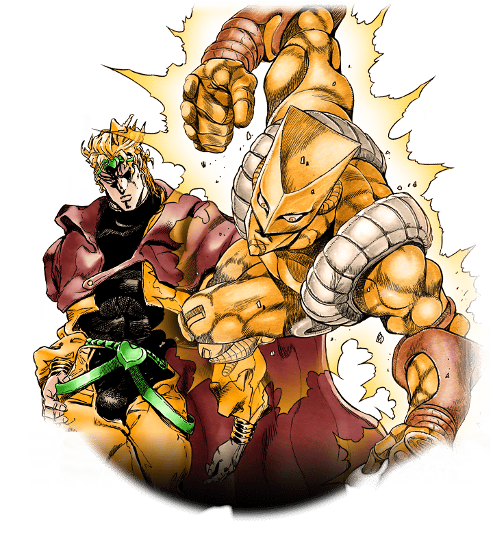

Kira on the other hand is the opposite of DIO and most other Jojo villains. He has no schemes for world domination, no legions of minions, and he'd rather just avoid fighting and "unnecessary" killing because it's messy and puts him at risk of no longer being able to lead the lifestyle hes grown accustomed too. He's also the opposite of most villains in that rather than being loud and fabulous he's more quiet, unassuming, and "normal" holding a steady job and just going about his daily routine the way any one of us would. The scary thing is that there are sociopaths like Kira in our world which makes him a very human villain despite him having psychic goast powers. If DIO succeeded in killing Jonathan or Jotaro or if Kars had killed Joseph they'd have gone on to conquer/destroy the world, if Kira had won the only thing that would happen is he'd continue merrily killing people for the rest of his life while the world at large remained unaware. Also both have iconic/awesome stands that, generally, make sense and don't require a huge amount of explanation. The World stops time, Killer Queen makes things explode; shit just works.
Kira is often considered to be the most unique antagonist as he does not have a world changing goal. Instead Kira only wishes to be left alone to his quiet yet destructive life. He is also the antagonist we learn the most small details about how he lives his life such as where he eats lunch and where he works. He has so many little quirks that form together to give the impression of a very individual person e.g. nail clip fortune telling, intentionally winning 3rd prize. By the end of part 4 I felt like I really knew Kira in a way I don't any other antagonist. JoJo or otherwise
Maybe it's just me, but I don't really find most of the JJBA villains to be that engaging. Most are worth a good gimmick or two, but the majority of villains feel only tangentially related to the story, with DIO being the big exception in my mind. Kira sticks out, IMO, for being a villain in scale with the setting. A big piece of Part 4 is the tight setting of Morioh, and the small town greatly influences how the arcs in it play out. Kira is a villain best suited for Morioh. He hides perfectly in it, and he plays into a kind of paranoia about suburban neighbors. His entire presence feels insidious and evil, because of the tight focus on the town. His character feels really tuned into the setting, unlike most of the other villains who are just different flavors of 'powerful megalomaniac bending the world t their will'.